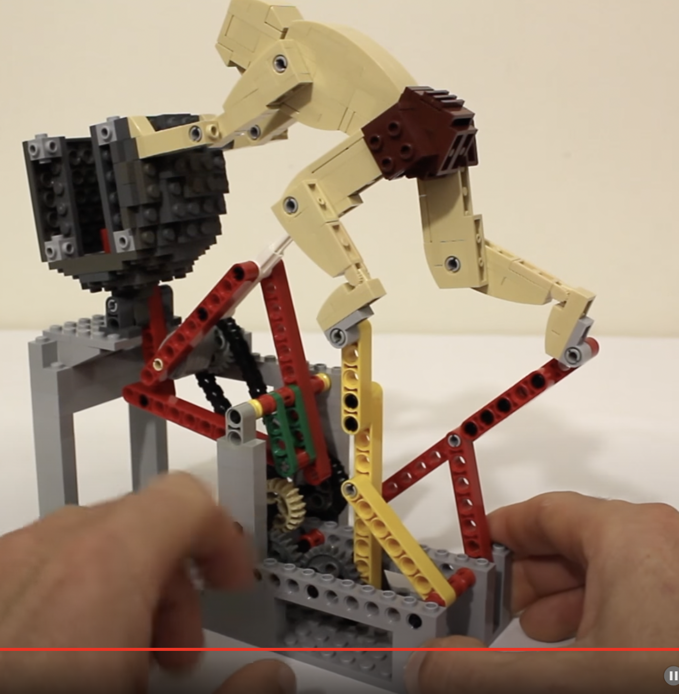
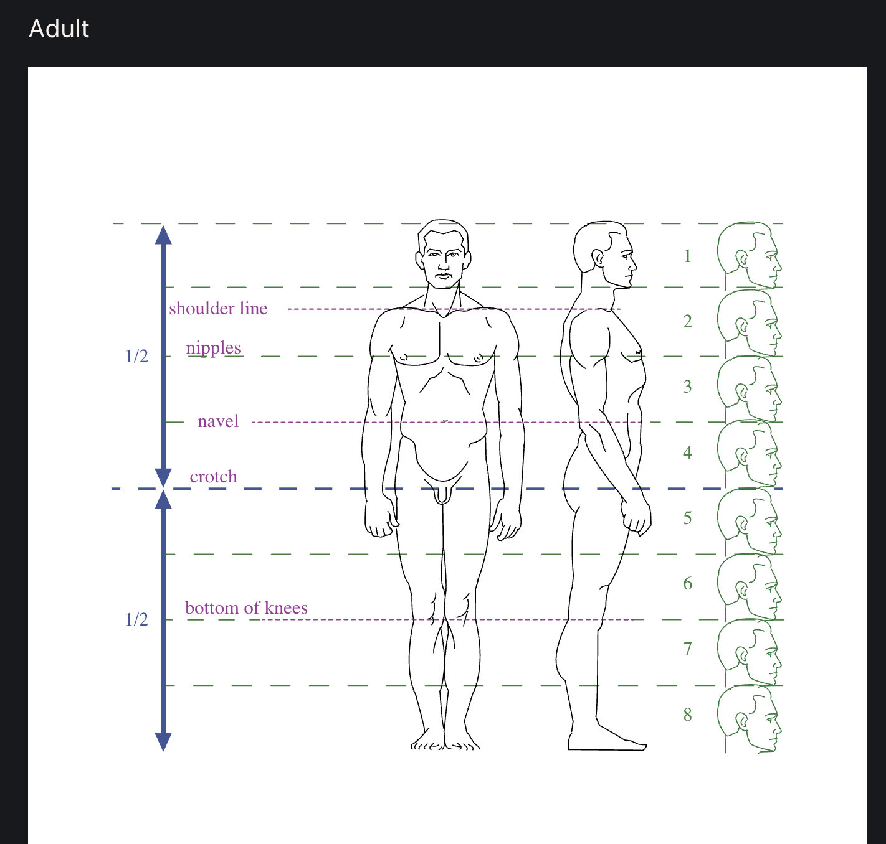
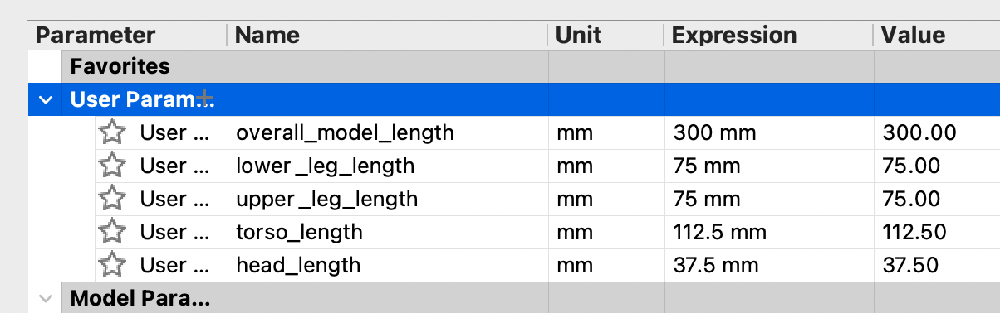
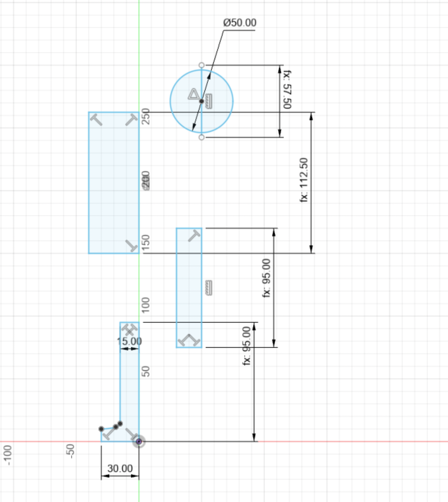
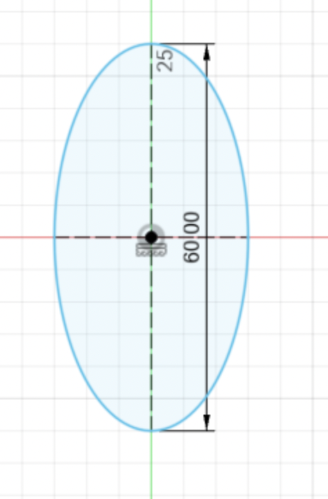
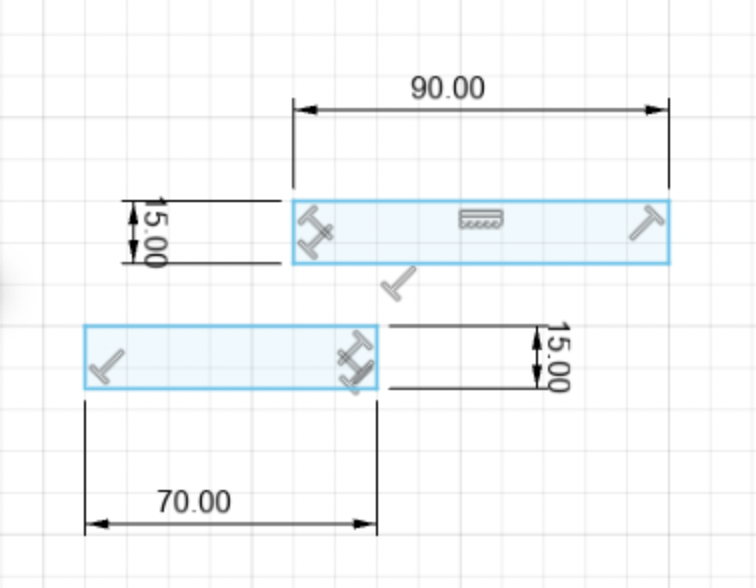
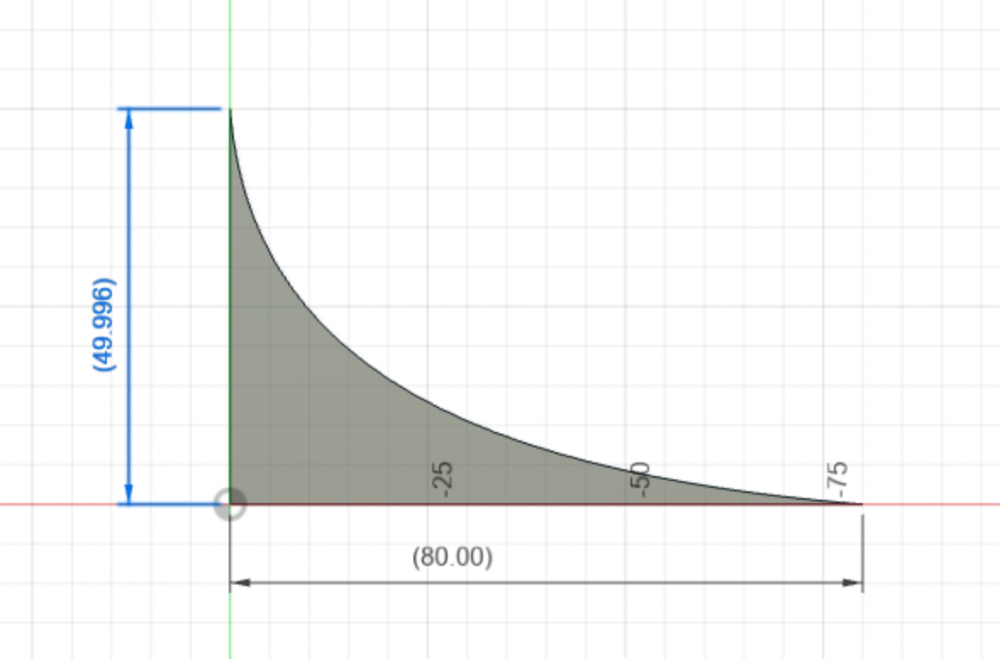
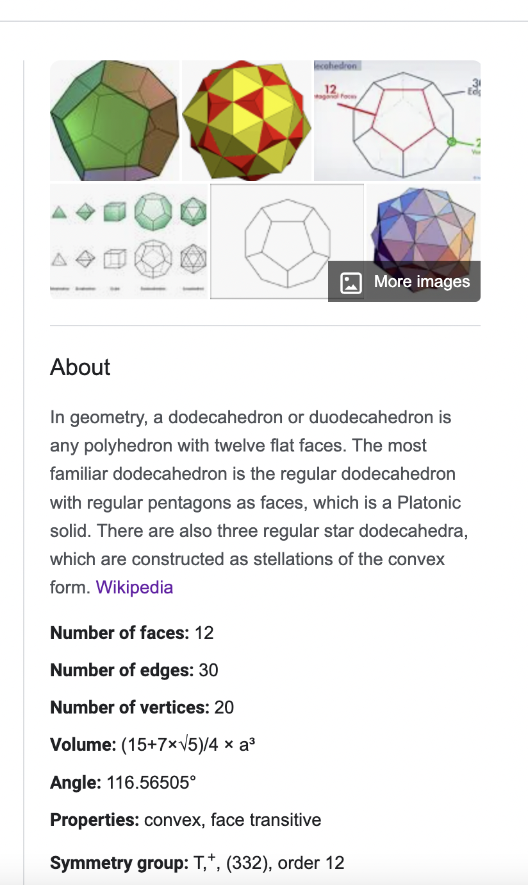
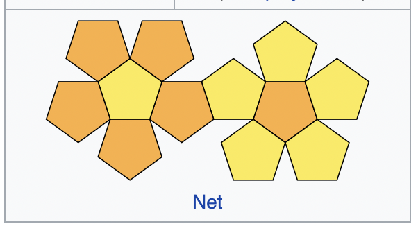
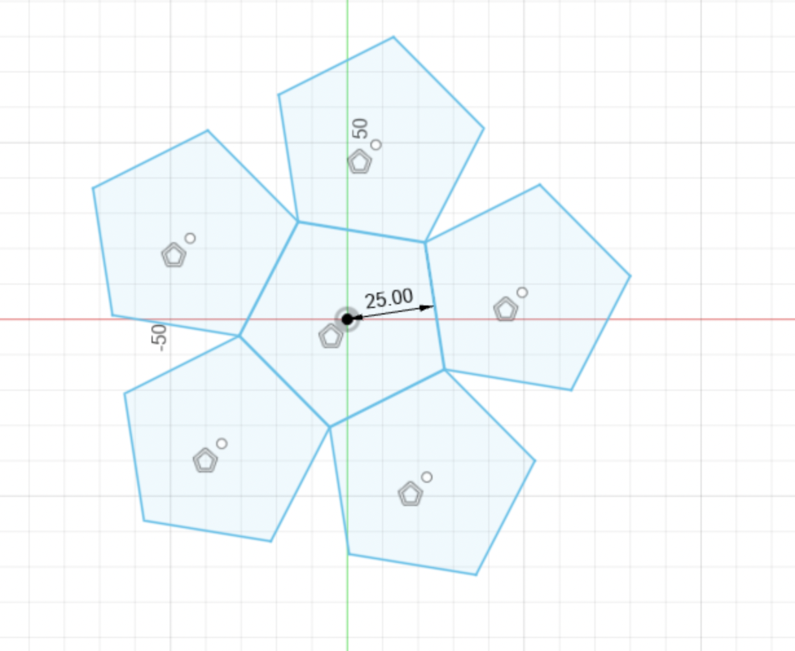

Week 3: Electronics & Tools
This week we're tasked with creating a kinetic sculpture, basically a motorized art object. This example of Sisyphus pushing his boulder caught my eye:
Link

We'll try using this as inspiration for a kinetic sculpture using cardboard, gears, and wooden poles.
First, let's consider the scale of the human. Using 1.9 meters for reference, we want a 300mm overall length of the model.
75mm for the lower leg section, 75mm for the upper leg section, 112.5mm for the torso, 37.5mm for the head

Based on this anatomical reference: https://hpc.anatomy4sculptors.com/

But, we need overlap for the joints, so let's add 20mm for each joint area as well.
The basic dimensions are mapped out.

The base is looking too unfinished, or nonexistent, so let's build a basic base for the motor to sit on.
145.2mm length base (both
102.6mm width base
97.59mm width base (shorter end)
We'll use the shorter width.
We want to move a stick up and down a short distance, so we'll connect an ellipse-shaped piece to the motor axle.

With calipers, I measured about a 30mm radius as acceptable for clearance for the platform. Printing this out should be useful for getting movement going in the sculpture.
Here's the cut cardboard oval. Attaching this to the motor axle will allow for minor upward and downward movement.


We'll use a straw to free-float a pair of sticks so that the Sisyphus figure can move in an upright position. Hot glue is used to attach the sticks.
The sticks are cut to different lengths to position the Sisyphus figure upright in an appropriate position for pushing.

The sticks are cut to different lengths to position the Sisyphus figure upright in an appropriate position for pushing the boulder.
We affix the sticks to the joints using cut straws and hot glue.

We'll need to construct a tower to keep Sisphyus upright. Some wood is hot glued to the base.

Another piece of wood is glued on.

A hole drilled through the top.

String threaded through the drilled hole.

Attach a small piece of wood to the head of the figure for support, then wrap the string around it and affix with hot glue.
This will allow it some freedom of movement while still being supported by the tower, which will be important for the motion of the kinetic sculpture.

Now the figure is upright and supported.

Next, we'll need some arms for Sispyhus.
The anatomical reference shows just under four head-lengths for the arm span. Four lengths would be 150mm,
so we'll go with 140mm, adding 20mm for the elbow joint.

Next we need a platform for the boulder. 220mm height and 80mm width was measured out from the base.
And we'll need a ramp for the boulder to nudge up against. That will occupy the 80mm x 80mm elevated base plate.

Now, let's try making a boulder. A dodecahedron with 12 regular pentagon faces would work.


Source: https://en.wikipedia.org/wiki/Dodecahedron
I measured the functional area of the boulder ramp to work well with around a 40mm-50mm diameter on the sides.
Let's try the 25mm radius pentagons and re-create the halves of the unfolded look per the Wikipedia diagram.
